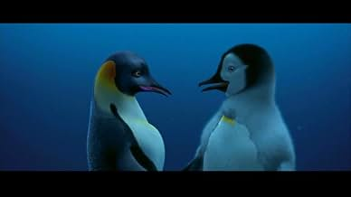
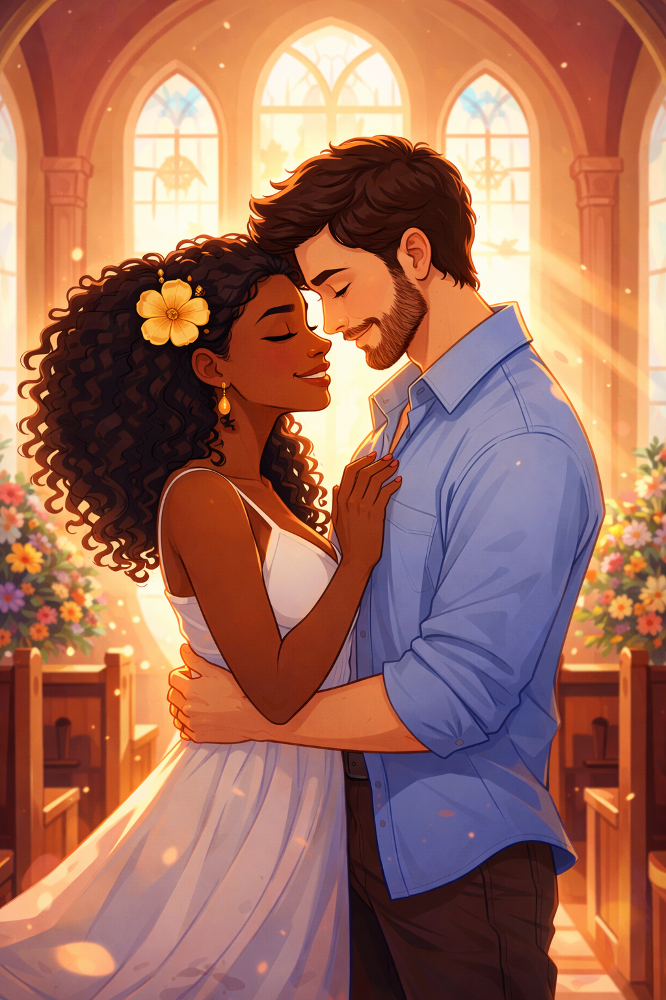

Criss's Day on the 06/02/2026
Morning
It was a chilly morning! It a bit cold today. I skipped the breakfast today, I did not feel like eating.
So I just got ready and went to the office. But before that I made a few phone calls to check some
online announcements to check where I can begin learning Dutch! Unfortunately, the interesting announcements
have not answered at that time.
Lunch
Today I was lucky and I found a parking spot behind the building of the office where I work for. Before
going upstairs I stopped at the grocery store to buy something quick to lunch on and some milk chocolate.
Once arrived at work, two of my colleagues were eating lunch, so I joined them as well. They also offered me
some of their food. It was a tasty lunch! The office was quite empty today, as there was only one colleague
working in the same office as the one I work in. So then I just got locked-in and got into working.
Later on my Dad arrived and we tried testing on the MacBook laptop. It was the first time using a
MacBook laptop and to be honest it was so different that one with Windows haha. I was so annoyed by the
fact that I did not know how to do the usual stuff that I do on Windows. Unfortunately, we could not make it work.
It was a strange error and we could not figure out how to fix it. It was a security protocol that we could not
bypass it.
Evening
My Dad and I were already finished kinda. He turned on an automated software on his PC and was waiting for it to finish.
So he turned on the TV to catch up with the news. I went to the room next door to communicate with the Dutch learning center!
I am excited to take this step. I told them about my level and that I would love to reach the conversational level. Then I will
be able to communicate with my love, and her beautiful family. After that I told my Dad that I got a project to continue working on
and that I am also tired and hungry so I went home. Once arrived I ordered some food because I did not feel like cooking today.
Meanwhile I wanted to watch Brother Bear and work on the project at the same time. So.. my fault Punciu, your Disney account was
still connected here haha. I hope you did not mind me using it Petut. But then the missing part hit me hard. I just wanted to be with you
and talk to you, because I was feeling very talkative. Then I remembered Happy Feet! And I really wanted to watch that movie since
it reminded me of Ping Ping! Well.. Ping Ping is a bit more than a dancer and a singer. But also because I missing my Penguin.
Roxi texted me. So I called her and let her know about my thought and my future plans. She was listening and asking some good questions
back. Roxi is very smart and has good criticism. Well it was one of the first times that I really felt her honesty and her telling me
that she likes this version of me and what she hears from. I think God was listening, because I was talking a lot about my love. And well.
She texted me. I was surprised. I felt happines, love and joy. I felt hope. After ending the call with Roxi, I talked with my Punciu.
He he, I was lucky enough to get on a video call with her. Even though just 2 days passed by, she looked proud of me. She was happy to hear my
actions. She felt listened and seen. I am glad that I can do that for you sweetie. Sweetheart. I am so in love with you. I am writing
this and I feel that nervouseness when you are in love. I want to come to you so bad. Let's meet soon and laugh, stare into each other's eyes
plan OUR goals, love each other, listen to each other, have deep talks, read the Bible, cook, take you on romantic takes. Baby I want to live
life with you. I love the way we matched those verses in the Bible. Damn, how this feeling of being in love makes me think and feel. I am getting slowly sleepy. Thank you for the call.
I love you. And I will see you soon. By the way, I am excited to go to Spain with you. U bent mooi. Ik hou van jou en slaap lekker.
The message of the day: `Gospel of Mark 10:9 "Therefore what God has joined together, let no one separate.”`
Photos of the day! (06/02/2026)

